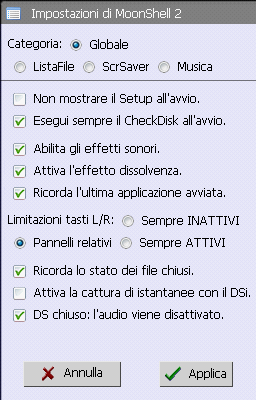
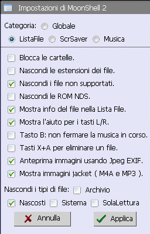
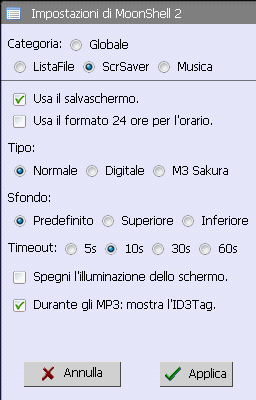
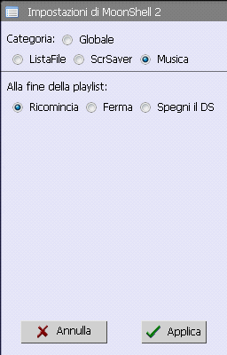
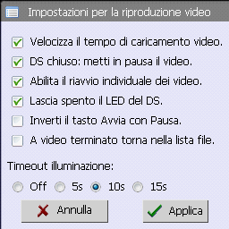
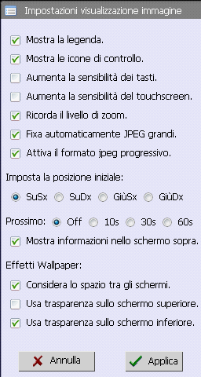
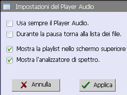
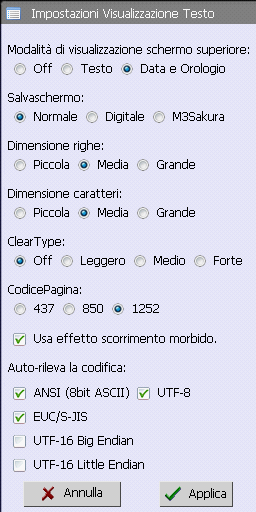

・Do not show Initial Setup on boot.
・Always run DiskCheck on boot.
Please do not remove the check groundlessly.
・Enable sound effects.
・Enable fade transition effect.
・Start MoonShell from Recent Files.
MoonShell starts from the file launcher if you used the HomeBrew application program.
・L/R key use limitation.
Alway OFF, Relational panel, Alway ON
・Resume information is regularly preserved.
Music and the image and the text maintain the last state.
・DSi uses the screen capture.
In DSi, the SELECT button is a brightness change. Please check this when you do the screen capture.
・When the lid is shut, the speaker power supply is turned off.
The earphone output is always effective.

・Lock folder navigation.
・Hide filename extensions.
・Hide unsupported files.
・Hide NDSROM files.
・Display file info in the File List.
Show only MP3, JPG, BMP, PSD, and DPG that the file information is displayed.
・Help of the L/R button is displayed.
When the L/R button is pushed long, the online help is displayed.
・The cursor goes out of the folder when B button.
Music is stopped usually.
・The deletion is executed with the X+A button.
It is an execution key when the file deletion dialog is displayed with the START button. It is L+R+A button usually.
・The thumbnail image is displayed by using Jpeg EXIF.
・The jacket images such as M4A and MP3 are displayed.
・Hide file attributes
Archive, Hidden, System, ReadOnly

・Use screen saver.
・Time is 24 hour system.
・Type
Std, Digital, Extra
・Bckgrnd
Default, Top Screen, Bottom Screen
・IdleTime
5, 10, 30, 60
・The backlight is turned off.
・Show ID3 tags.

・When playlist ends.
Loop, Stop, PowerOff

・Enable FastStart video playback.
When this is checked, it begins early. However, "Heavy animation file" might not work.
・Pause video when the DS is closed.
・Enable individual resume.
・Power supply LED is turned off.
・Change skin. Play vs pause icon.
Only externals (skin) change places. The function doesn't change.
・The screen returns whenever the video ends.
It always returns to the file list regardless of the play mode (seq, random, loop).
・Backlight timeout (sec)
Off, 10, 30, 60

・Show file info and help.
・Show control icons.
・Increase button sensitivity.
・Increase touch screen sensitivity.
・Remember zoom.
・Auto-fit large JPEGs.
・Enabled progressive jpeg format.
The decipherment of the Progressive jpeg file is very slow, and cannot be canceled on the way.
・Start Position Display:
Up-Lt, Up-Rt, Down-Lt, Down-Rt
・Auto next
Off, 10, 30, 60
・Information is displayed to top screen.
・Enable effects when changing wallpapers.
It is a conversion filter setting when the START button is pushed while displaying the image.
・Account for gap between screens.
・Apply transparency to top screen.
・Apply transparency to bottom screen.

・The music player is always used.
When A button is pushed by the file list, not the performance simultaneously but the music player is started.
・Returns to the file list after the pause is done.
・Show play list to the top screen.
・A spectrum analyzer is displayed.
When FFT is calculated while reproducing a heavy format (MIDI and WMA, etc.), the noise might be heard.

・Top Screen Display Mode:
Off, Text, Time & Information
・Screen saver
Standard, Digital, Extra
・Spacing
Narrow, Normal, Wide
・Text size
Small (12pix), Medium (14pix), Large (16pix)
・Clear type
None, Thin, Standard, Bold
The clear type font might grow dim. (By the manufacturing age of your NDS. )
・Code page
CP437 (US, AUS), CP850 (DOS), CP1252 (Windows)
This is used only because of the ANSI format.
・Use smooth scroll.
・Encoding Auto-Detect Type
Please check only the format that you use.